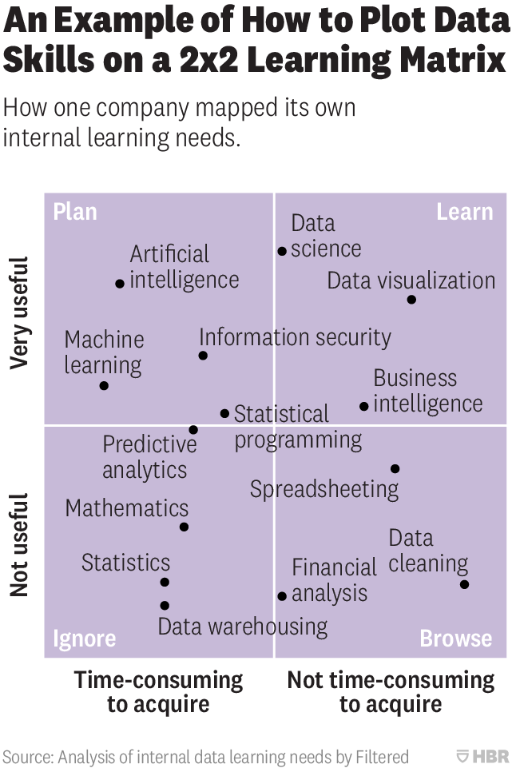

Chapter 6 Onboarding
Welcome to the lab! This is an incomplete checklist of items to cover in your first week. We’ll review all of this in a meeting the first day.
The most important things are to read the whole handbook and not to hesitate to ask questions.
Before you arrive, if possible, let me know if you’ll need a laptop, so we can have one waiting for you. Connie can work with you if you need a visa. I can also help link you up with people who can help with housing.
Workspace
- Identify hardware to purchase: monitor, laptop, external hard drive, keyboard, mouse, etc.
- Any other accommodations needed for comfortable work station?
- Key to lab (from E&E office, $20 deposit required)
- Get UChicago ID card from library. This gives you access to the building.
- Consider asking for access now to other spaces you may visit, e.g., immunology (4th floor of KCBD).
Computing and admin
- Request an account to use the Cobey partition on Midway.
- Request access to the lab’s Asana workspace.
- Request access to the cobeylab github account. (Create a github account if you’ve not yet.)
- Get access to our Instagram account. You’re free to contribute whenever you want, but please check with subjects that they don’t mind their picture being posted to the internet.
- Request access to the theory group calendar and the lab calendar
- Download and install the University VPN so you can access resources off campus.
- Consider signing up for emails on additional seminar series and groups. (Note that a list of almost all BSD seminars will automatically be emailed to you every day.)
- Ask Garnett to help you set up CrashPlan Pro and the external hard drive for backups.
- Garnett can also help you add the printer.
- Figure out a lab service task. These tasks are basically chores, e.g., managing office supplies and the lab environment, maintaining the lab calendar and getting people signed up for meetings, etc. On Asana, they go by the euphemism “Areas of Responsibility”. They’re nonetheless critical for allowing us to work efficiently and happily. You’ll also be assigned to a week of kitchen duty (basically, making sure other people clean up their messes, and picking up the slack if they don’t).
- Write your profile for the lab website, and upload your CV (we could review it together first, if you like).
Research
- Scour the active research projects on Asana. (If you can see them, you’re welcome to investigate the contents.) Ask people what’s going on with each.
- Read more recent papers from the lab so you are familiar with lab member’s areas of expertise.
- Discuss one-year goals and your long-term plans.
- Identify short-term research goals (i.e., your initial project(s)), deadlines for initial research outputs, and deadlines for funding and conferences. Although we should focus on outputs, let’s discuss if there are any immediate skills you need to develop to complete the work (Figure).
- Let me know how you like to interact, how you like to work, and if there are practices or principles described in the handbook that you would like to see changed, or at least don’t work well for you. We can negotiate policies.
- Learn who/what is funding your research. Read at least the corresponding grant proposal, if we have one, and potentially other recent proposals (all on Asana).
- Identify a time for weekly meetings.
- Figure out with me if you need training in human subjects research.

Figure 6.1: No
Introductions
- Lab members! We’ll have a big lab lunch or dinner soon after you arrive, but I encourage you to meet with everyone individually in the first week or two.
- E&E administrators and IT
- Building administrators and custodians
- Neighbors in the Erman Building
- Other faculty
- Postdocs should consider joining the postdoc happy hour on Fridays
Life and around town
- Check out University perks & discounts. Note deals for phones, housing, etc.
- If you’re commuting from outside Hyde Park, consider signing up for commuter benefits (if you are eligible). Get a Ventra card, which works on all buses and the El/CTA.
- You can download the Metra app if you’ll be taking the Metra Electric line to/from downtown.
- Ask around about which health plans are en vogue.